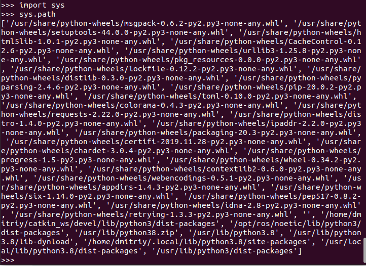

Объектно-ориентированное программирование
Ссылки: Лекция 4: Объектно-ориентированное программированиеОбъектно-ориентированное программирование. Классы, объекты
Основы ООП. Создание класса и объекта
Видеоуроки Егорова Артема
Создание классов и объектов
9. Classes
Python/Объектно-ориентированное программирование на Python
Что такое объектно-ориентированное программирование (ООП)
Циклы, ветвления и функции – все это элементы структурного программирования. Его возможностей вполне хватает для написания небольших, простых программ и сценариев. Однако крупные проекты часто реализуют, используя парадигму объектно-ориентированного программирования (ООП). Что оно из себя представляет и какие преимущества дает?В языке Python ООП играет ключевую роль. Даже программируя в рамках структурной парадигмы, вы все равно пользуетесь объектами и классами, пусть даже встроенными в язык, а не созданными лично вами.
Итак, что же такое объектно-ориентированное программирование?
Допустим, команда программистов занимается разработкой игры. Программу-игру можно представить как систему, состоящую из цифровых героев и среды их обитания, включающей множество предметов. Каждый воин, оружие, дерево, дом – это цифровой объект, в котором "упакованы" его свойства и действия, с помощью которых он может изменять свои свойства и свойства других объектов.
Каждый программист может разрабатывать свою группу объектов. Разработчикам достаточно договориться только о том, как объекты будут взаимодействовать между собой, то есть об их интерфейсах. Пете не надо знать, как Вася реализует рост коровы в результате поедания травы. Ему, как разработчику лужайки, достаточно знать, что когда корова наклоняется к траве, последней на лужайке должно становиться меньше.
Ключевую разницу между программой, написанной с структурном стиле, и объектно-ориентированной можно выразить так. В первом случае, на первый план выходит логика, понимание последовательности выполнения действий для достижения поставленной цели. Во-втором – важнее представить программу как как систему объектов, взаимодействие которых способно решить ту или иную задачу.
Основными понятиями, используемыми в ООП, являются класс, объект, наследование, инкапсуляция и полиморфизм. В языке Python класс равносилен понятию тип данных.
Что такое класс или тип?
Проведем аналогию с реальным миром. Если мы возьмем конкретный стол, то это объект, но не класс. А вот общее представление о столах, их назначении – это класс. Ему принадлежат все реальные объекты столов, какими бы они ни были. Класс столов дает общую характеристику всем столам в мире, он их обобщает.То же самое с целыми числами в Python. Тип int – это класс целых чисел. Числа 5, 100134, -10 и т. д. – это конкретные объекты этого класса.
В языке программирования Python объекты принято называть также экземплярами. Это связано с тем, что в нем все классы сами являются объектами класса type. Точно также как все модули являются объектами класса module.
Поэтому во избежании путаницы объекты, созданные на основе обычных классов, называют экземплярами.
Объект
В Python всё является объектами - строки, списки, словари, файлы, всё остальное.Объекты имеют атрибуты и методы.
Проверить является ли какое-то значение объектом, можно с помощью функции: isinstance(var, object):
isinstance(4, object)
True
>>> isinstance(Person, object)
True
>>> isinstance('stroka', object)
True
Здесь object - является самым верхним объектом (надклассом) и поэтому все значения входят в object, но можно делать проверку на вхождение значения в какой-нибудь конкретный класс, например: a = Person() и isinstance(a, Person) вернёт True
Типы переменных (все что выводится через type(variable)) является встроенным классом в питоне. Например целые числа имеют тип или класс int. Строки принадлежат классу str.
Чтобы создать экземпляр класса нужно выполнить var = name_class(). Пример:
a = int() a # будет выведен 0 , так как по умолчанию создается объект класса int равным 0 >>> s = str() >>> s ''Для строки по умолчанию создается пустая строка.
- Идентификатор объекта
Каждый объект обладает своим уникальным идентификатором.
Узнать идентификатор объекта можно с помощью функции id():>>> x = [1, 2, 3] >>> id(x) 140705499364608 >>> id([1, 2, 3]) 140705499676224
В данном примере создал два разных объекта x и [1, 2, 3] - Оператор is
Также узнать ссылаются ли переменные на один и тот же объект (одинаковые идентификаторы) можно с помощью оператора is:>>> y = x >>> y is x True >>> y is [1, 2, 3] False
- Изменяемые/неизменяемые объекты
В зависимости от того является ли объект изменяемым или нет, будет отличаться результат после выполнения операций с объектом:x = [1, 2, 3] y = x y.append(4) s = "123" t = s t = t + "4" print(str(x) + " " + s)
Будет выведено [1, 2, 3, 4] 123
так как список является изменяемым объектом и изменив его через ссылку x, мы изменили его и для y. А строка является неизменяемым объектом, потому выполнив t = t + '4', мы создаем новый объект (место в памяти) для t, а s по-прежнему ссылается на свой объект '123'Объекты бывают изменяемые и неизменяемые (англ. mutable и immutable). К неизменяемым относятся целые числа (int), числа с плавающей запятой (float), булевы значения (bool), строки (str), кортежи (tuple). К изменяемым — списки (list), множества (set), байтовые массивы (byte arrays) и словари (dict).
- Тип объекта
Каждый объект имеет свой тип.
Тип объекта можно узнать с помощью функции type()
Тип объекта определяет возможные значения объекта, его возможные методы. - Без ссылок новые объекты не создаются!
Кешируются числа от -5 до 256 - т.е. при работе с этими числами Python обычно не будет создавать новый объект. Так же кешируются строки, которые содержат только буквы, числа и нижнее подчеркивание. Но это не гарантированное свойство, потому не нужно на это полагаться при проверке идентичности объектов.
Гарантированно в единствнном виде представлен (является синглтоном) из часто употребимых - None. С ним всегда используют для проверки оператор is, а не ==, т.к. он гарантированно будет в единственном экземпляре в памяти.
Класс
-
Объекты описываются не индивидуально, а с помощью классов. Класс - объект, являющийся шаблоном чертежём объекта.
Объект, созданный на основе некоторого класса, называется экземпляром класса.В Python термины «класс», «тип» и «тип данных» имеют одинаковый смысл, являются синонимами.
В языке программирования Python классы создаются с помощью ключевого слова class, за которой следует произвольное имя класса (первая буква всегда большая), после которого ставится двоеточие, далее с новой строки и с отступом реализуется тело класса:
class ИмяКласса: код_тела_классаЕсли класс является дочерним, то родительские классы перечисляются в круглых скобках после имени класса.Класс определяет тип объекта, то есть его возможные состояния и набор операций.
Объект создается путем вызова класса по его имени. При этом после имени класса обязательно ставятся скобки:
ИмяКласса()
То есть класс вызывается подобно функции. Однако в случае вызова класса происходит не выполнение его тела, как это происходило бы при вызове функции, а создается объект. Поскольку в программном коде важно не потерять ссылку на только что созданный объект, то обычно его связывают с переменной. Поэтому создание объекта чаще всего выглядит так:
имя_переменной = ИмяКласса()
В последствии к объекту обращаются через связанную с ним переменную.
Пример "пустого" класса и двух созданных на его основе объектов:
>>> class A: ... pass ... >>> a = A() >>> b = A()
Класс как пространство имен
С точки зрения пространства имен класс можно представить подобным модулю. Также как в модуле в классе могут быть свои переменные со значениями и функции. Также как в модуле у класса есть собственное пространство имен, доступ к которому возможен через имя класса:>>> class B: ... n = 5 ... def adder(v): ... return v + B.n ... >>> B.n 5 >>> B.adder(4) 9
Однако в случае классов используется особая терминология:
Имена, определенные в классе, называются атрибутами этого класса.
В примере имена n и adder – это атрибуты класса B.
Атрибуты-переменные часто называют полями или свойствами
(в других языках понятия "поле" и "свойство" не совсем одно и то же). Полем является n.
Атрибуты-функции называются методами.
Методом в классе B является adder. Количество свойств и методов в классе может быть любым.Класс как шаблон для создания объектов
На самом деле классы – не модули. Они своего рода шаблоны, от которых создаются объекты-экземпляры. Такие объекты наследуют от класса его атрибуты. Вернемся к нашему классу B и создадим на его основе два объекта:
У объектов, связанных с переменными a и b, нет собственного поля n. Однако они наследуют его от своего класса:>>> class B: ... n = 5 ... def adder(v): ... return v + B.n ... >>> a = B() >>> b = B()
>>> a.n 5 >>> a.n is B.n True
То есть поля a.n и B.n – это одно и то же поле, к которому можно обращаться и через имя a, и через имя b, и через имя класса. Поле одно, ссылок на него три.Однако что произойдет в момент присваивания полю n значения через какой-нибудь объект-экземпляр?
>>> a.n = 10 >>> a.n 10 >>> b.n 5 >>> B.n 5
В этот момент у экземпляра a появляется собственный атрибут n, который перекроет (переопределит) родительский, то есть тот, который достался от класса.>>> a.n is B.n False >>> b.n is B.n True
При этом присвоение через B.n отразится только на b и B, но не на a:>>> B.n = 100 >>> B.n, b.n, a.n (100, 100, 10)
Как применить метод к экземпляру класса?
Иная ситуация нас ожидает с атрибутом adder. При создании объекта от класса функция adder не наследуется как есть, а как бы превращается для объекта в одноименный метод:>>> B.adder is b.adder False >>> type(B.adder) <class 'function'> >>> type(b.adder) <class 'method'>
Через имя класса мы вызываем функцию adder:>>> B.adder(33) 133
Через имя объекта вызываем метод adder:>>> b.adder(33) Traceback (most recent call last): File "
В сообщении об ошибке говорится, что adder принимает только один аргумент, а было передано два. Откуда появился второй, если в скобках было указано только одно число?", line 1, in <module> TypeError: adder() takes 1 positional argument but 2 were given
Дело в том, что в отличии от функции в метод первым аргументом всегда передается объект, к которому применяется этот метод. То есть выражение b.adder(33) как бы преобразовывается в adder(b, 33). Сам же b.adder как объект типа method хранит сведения, с каким классом он связан и какому объекту-экземпляру принадлежит:>>> b.adder <bound method B.adder of <__main__.B object at 0x7fcbf1ab9b80>>
В нашем случае, чтобы вызывать adder через объекты-экземпляры, класс можно переписать так:>>> class B: ... n = 5 ... def adder(obj, v): ... return v + obj.n ... >>> b = B() >>> b.adder(33) 38
В коде выше при вызове метода adder переменной-параметру obj присваивается объект, связанный с переменной, к которой применяется данный метод. В данном случае это объект, связанный с b. Если adder будет вызван на другой объект, то уже он будет присвоен obj:>>> a = B() >>> a.n = 9 >>> a.adder(3) 12
В Python переменную-параметр метода, которая связывается с экземпляром своего класса, принято называть именем self.
Таким образом, более корректный код будет таким:>>> class B: ... n = 5 ... def adder(self, v): ... return v + self.n
Можем ли мы все также вызывать adder как функцию, через имя класса? Вполне. Только теперь в функцию надо передавать два аргумента:>>> B.adder(B, 200) 205 >>> B.adder(a, 200) 209
Здесь первым аргументом в функцию передается объект, у которого есть поле n лишь только потому, что далее к этому полю обращаются через выражение self.n.При описании класса и внутри методов в теле метода обращения к полям идут в виде self.поле = поле
Атрибут __dict__
В Python у объектов есть встроенные специальные атрибуты. Мы их не определяем, но они есть. Одним из таких атрибутов объекта является свойство __dict__. Его значением является словарь, в котором ключи – это имена свойств экземпляра (переменные - атрибуты), а значения – текущие значения свойств.>>> class B: ... n = 5 ... def adder(self, v): ... return v + self.n ... >>> w = B() >>> w.__dict__ {} >>> w.n = 8 >>> w.__dict__ {'n': 8}В примере у экземпляра класса B сначала нет собственных атрибутов. Свойство n и метод adder – это атрибуты объекта-класса, а не объекта-экземпляра, созданного от этого класса. Лишь когда мы выполняем присваивание новому полю n экземпляра, у него появляется собственное свойство, что мы наблюдаем через словарь __dict__.В следующем уроке мы увидим, что свойства экземпляра обычно не назначаются за пределами класса. Это происходит в методах классах путем присваивание через self. Например, self.n = 10.
Атрибут __dict__ используется не только для просмотра свойств объекта. С его помощью можно удалять, добавлять свойства, а также изменять их значения.
>>> w.__dict__['m'] = 100 >>> w.__dict__ {'n': 8, 'm': 100} >>> w.m 100Пример:
Пусть в ходе анализа данной предметной области необходимо определить класс Граф. Граф - это множество вершин и набор ребер, попарно соединяющий эти вершины. Над графом можно проделывать операции, такие как добавление вершины, ребра, проверка наличия ребра в графе и т.п. На языке Python определение класса может выглядеть так:from sets import Set as set # тип для множества class G: def __init__(self, V, E): self.vertices = set(V) self.edges = set(E) def add_vertex(self, v): self.vertices.add(v) def add_edge(self, (v1, v2)): self.vertices.add(v1) self.vertices.add(v2) self.edges.add((v1, v2)) def has_edge(self, (v1, v2)): return (v1, v2) in self.edges def __str__(self): return "%s; %s" % (self.vertices, self.edges)Использовать класс можно следующим образом:g = G([1, 2, 3, 4], [(1, 2), (2, 3), (2, 4)]) print g g.add_vertex(5) g.add_edge((5,6)) print g.has_edge((1,6)) print g
что даст в результате:Set([1, 2, 3, 4]); Set([(2, 4), (1, 2), (2, 3)]) False Set([1, 2, 3, 4, 5, 6]); Set([(2, 4), (1, 2), (5, 6), (2, 3)])
Как видно из предыдущего примера, определить класс не так уж сложно. Конструктор класса имеет специальное имя __init__. (Деструктор здесь не нужен, но он бы имел имя __del__.)
Методы класса определяются в пространстве имен класса.
В качестве первого формального аргумента метода принято использовать self.
Кроме методов в объекте класса имеются два атрибута: vertices (вершины) и edges (ребра).
Для представления объекта G в виде строки используется специальный метод __str__().Принадлежность классу можно выяснить с помощью встроенной функции isinstance():
print isinstance(g, G)
Конструктор класса
Исполнение конструктора класса начинается в момент создания нового объекта этого класса. Конструктор является специальным методом, который обязательно вызывается при создании объекта. Он отвечает за инициализацию переменных и установку начальных значений для нового экземпляра класса. Конструктор вызывается автоматически при создании объекта и возвращает готовый к использованию экземпляр класса.Конструкторы позволяют задать некие характеристики для объекта сразу же при его создании. К примеру, у вас есть несколько переменных, которые точно должен иметь объект. Вы можете создать конструктор и указать несколько параметров, которые будут переданы при создании объекта.
В одном классе может быть неограниченное количество конструкторов и сам интерпретатор будет понимать к какому конструктору вы обращаетесь. Чтобы создать конструктор необходимо использовать ключевое слово __init__.
Вот пример, который демонстрирует использование метода __init__() для создания конструктора:
class Person: def __init__(self, name, age): self.name = name self.age = age def introduce(self): print("Привет, меня зовут", self.name, "и мне", self.age, "лет.") person1 = Person("Алиса", 25) person1.introduce()В этом примере у нас есть класс Person, у которого есть метод __init__() и метод introduce().
Метод __init__() принимает два параметра: name и age.
Внутри метода __init__() мы присваиваем значения этих параметров атрибутам self.name и self.age соответственно.
При создании нового экземпляра класса Person и передаче имени и возраста в качестве аргументов, метод __init__() автоматически вызывается и инициализирует атрибуты объекта.
Затем мы можем вызывать метод introduce(), который использует значения атрибутов name и age для вывода информации о человеке. Вывод программы будет следующим: Привет, меня зовут Алиса и мне 25 лет.
Таким образом, метод __init__() позволяет задать начальные значения атрибутов объекта класса во время его создания. Он играет важную роль в инициализации объектов и предоставляет возможность установить начальное состояние объекта.Если вы определите метод с другим названием, а не __init__(), и используете его для инициализации атрибутов объекта, то при создании экземпляра класса вам нужно будет вызвать этот метод явно. Вот пример кода, где используется метод blabla() для инициализации атрибутов объекта:
class Person: def blabla(self, name, age): self.name = name self.age = age def introduce(self): print("Привет, меня зовут", self.name, "и мне", self.age, "лет.") person1 = Person() # вроде здесь создали экземпляра person1.blabla("Алиса", 25) # а здесь вроде присвоили значения атрибутам экземпляра person1.introduce()В этом примере мы создаем экземпляр класса Person без вызова метода __init__(). Вместо этого мы вызываем метод blabla() и передаем аргументы "Алиса" и 25, которые инициализируют атрибуты объекта name и age. Затем мы вызываем метод introduce(), который использует значения атрибутов name и age для вывода информации о человеке. Вывод программы будет следующим:
Привет, меня зовут Алиса и мне 25 лет.
Таким образом, вы можете использовать метод с любым другим названием, чтобы инициализировать атрибуты объекта. Однако, важно помнить, что вам нужно будет вызвать этот метод явно при создании экземпляра класса.В Python, параметр self используется в методах класса для ссылки на сам объект (экземпляр класса), для которого вызывается метод. Он является обязательным параметром в определении методов класса.
Параметр self позволяет обращаться к атрибутам и методам объекта внутри самого класса. Он представляет собой ссылку на сам экземпляр класса, с помощью которого можно получить доступ к его атрибутам и вызвать его методы.
Если не использовать параметр self в методах класса, то не будет возможности получить доступ к атрибутам и методам объекта. Без использования self, метод не будет знать, какой объект класса обрабатывается, и будет вызвана ошибка.
TypeError: introduce() takes 0 positional arguments but 1 was given
Приватные атрибуты класса
В отличии от языка С++ в Python нет способа создать приватный атрибут (поле) класса типа private, чтобы к нему можно было обращаться только через методы класса. Но принято считать, что если имя атрибута начинается с нижней черточки, то к этому атрибуту желательно обращаться через метод класса, а не напрямую. Тем не менее напрямую обращаться можно.
class BankAccount:
def __init__(self, accountHolder):
# Методы BankAccount могут обращаться к self._balance, но код
# за пределами класса этого делать не должен:
self._balance = 0
self._name = accountHolder
with open(self._name + 'Ledger.txt', 'w') as ledgerFile:
ledgerFile.write('Balance is 0\n')
def deposit(self, amount):
if amount <= 0:
return # Отрицательные "зачисления" недопустимы.
self._balance += amount
with open(self._name + 'Ledger.txt', 'a') as ledgerFile:
ledgerFile.write('Deposit ' + str(amount) + '\n')
ledgerFile.write('Balance is ' + str(self._balance) + '\n')
def withdraw(self, amount):
if self._balance < amount or amount < 0:
return # Не хватает средств на счете или снимается
# отрицательная сумма.
self._balance -= amount
with open(self._name + 'Ledger.txt', 'a') as ledgerFile:
ledgerFile.write('Withdraw ' + str(amount) + '\n')
ledgerFile.write('Balance is ' + str(self._balance) + '\n')
acct = BankAccount('Alice') # Создание учетного счета.
acct.deposit(120) # _balance можно изменять через deposit()
acct.withdraw(40) # _balance можно изменять через withdraw()
# Изменение _name или _balance за пределами BankAccount нежелательно, но возможно:
acct._balance = 1000000000
acct.withdraw(1000)
acct._name = 'Bob' # Теперь изменяется счет Боба!
acct.withdraw(1000) # Операция регистрируется в BobLedger.txt!
|
Хорошо спроектированные классы в целом автономны, и они должны предоставлять методы для присваивания атрибутам допустимых значений. Атрибуты _balance и _name помечены как приватные, а значение класса BankAccount должно изменяться только при помощи методов deposit() и withdraw() . Эти два метода содержат проверки , которые проверяют, что атрибут _balance не переводится в недействительное состояние (например, ему не присваивается отрицательное целое значение). Методы также регистрируют каждую операцию для текущего баланса. Код за пределами класса, изменяющий эти атрибуты (например, команды acct._balance = 1000000000 или acct._name = 'Bob'), может перевести объект в некорректное состояние и создать ошибки.
Наследование, инкапсуляция и полиморфизм
Помимо классов и объектов, ООП содержит дополнительные три основные концепции: наследование, инкапсуляция и полиморфизм.- Наследование
За счёт наследования можно создать один общий класс (класс родитель) и создать множество других классов (классы наследники), что будут наследовать все поля, методы и конструкторы из главного класса.Зачем использовать наследование?
Предположим что у нас есть один большой класс «Транспорт». В классе описываются базовые характеристики для всех транспортных средств:поля: скорость, вес, запас хода и тому подобное;
методы: получение информации из полей, установка новых значений;
конструктор: пустой и по установке всех полей.
На основе класса мы спокойно можем создать объект легковой машины, объект грузовика, объект самолета и так далее. У всех объектов будут одинаковые характеристики и методы.
Мы явно понимаем, что у объекта машина и самолёт будут разные поля и характеристики. Как можно поступить:
Можно создать два отдельных класса: «Car» и «Airplane». В каждом классе будут все методы, поля и конструкторы повторно переписанные из класса «Транспорт», а также будут новые методы, что важны только для конкретного класса; Можно создать два класса наследника: «Car» и «Airplane». Оба класса будут наследовать всё от класса «Транспорт» и при этом будут содержать свои дополнительные функции. Таким образом повторения кода не будет и код станет меньше и чище.
Создание классов наследников
Для создания класса наследника требуется создать класс и указать наследование от главного класса.Пример класса наследника:
class Cars: wheels = 4 # Общее значение для всех объектов, # так как все машины имеют колеса class BMW (Cars): is_m_serias = true # Является ли модель "М" серии? # Переменная нужна только в классе BMW
Основное (но не единственное) преимущество, которое дает концепция наследования в программировании, – это вынос одинакового кода из разных классов в один родительский класс. Другими словами, наследование позволяет сводить на нет повторение кода в разных частях программы.
Для определения является ли класс B наследником класса A (или A - родитель для B) служит функция issubclass(child, parent):
issubclass(B, A)
вернёт True, если класс B является потомком класса A, иначе False.
Самым верхним классом, который не имеет родителя (надкласса) является objekt.
Странно, почему issubclass(int, objekt) выдает ошибку, как и type(objekt)?Множественное наследование
Для ответа на вопрос в каком порядке будет искаться метод в нескольких классах, служит функция mro():Name_class.mro()
выдаст список из Name_class и родительских классов в порядке в каком будет искаться какой-нибудь метод. Этот порядок равен порядку в каком родительские классы указаны в качестве аргументов (в скобках) при объявлении Name_class.Конкретный пример:
>>> int.mro() [<class 'int'>, <class 'object'>]
Функция super()
super() - это функция, которая позволяет вызывать методы родительского класса в дочернем классе. Она используется, когда нужно вызвать методы родительского класса в дочернем классе, чтобы избежать дублирования кода и улучшить его читаемость.Функция super() можно использовать для вызова методов как в методах, так и в конструкторах дочернего класса.
Как работает функция super() в Python?
Когда мы создаем дочерний класс, он наследует все атрибуты и методы родительского класса. Для того, чтобы вызвать метод родительского класса, мы можем использовать функцию super().При вызове super() Python ищет родительский класс в иерархии наследования, начиная с текущего класса и переходя к родительским классам в порядке, заданном в списке наследования. После нахождения родительского класса, super() вызывает его методы и передает все аргументы, которые были переданы методу дочернего класса.
Пример использования super() в Python Рассмотрим пример, который показывает, как использовать super() для вызова метода родительского класса.
class Animal: def __init__(self, name): self.name = name def make_sound(self): print("The animal makes a sound") class Dog(Animal): def __init__(self, name): super().__init__(name) def make_sound(self): super().make_sound() print("The dog barks") my_dog = Dog("Buddy") my_dog.make_sound()В этом примере у нас есть два класса: Animal и Dog. Класс Dog наследует от Animal.Мы переопределяем метод make_sound() в классе Dog, но вместо того, чтобы полностью переписывать метод, мы вызываем метод make_sound родительского класса с помощью super(), а затем добавляем к нему свой код.
Результат выполнения этого кода будет:
>>> The animal makes a sound >>> The dog barks
В этом примере мы вызываем метод make_sound() родительского класса с помощью super(), а затем добавляем к нему свой код, чтобы сделать ту же самую вещь, но с дополнительным функционалом.Синтаксис:
Если super().metod() то metod() будет браться с родительского класса в порядке аргументов текущего класса.Если super(Name_class, self).metod() то metod() будет искаться в родительском классе для класса Name_class.
Правило наследования:
если среди родителей класса - два класса, которые являются прямыми "родственниками", причём "родитель" перечислен до "потомка" - то возникает ошибка. Потому, как - вроде программист определяет такой порядок, а MRO предусматривает обратный (т.е. сначала "потомки" - потом "родители"). - Полиморфизм
Полиморфизм позволяет изменять функции в классах наследниках. Пример:class Cars: def nothing(self): # Пустая функция pass class BMW (Cars): def nothing(self, word): print (word + "!") # Функция теперь будет работать по новому a = BMW() a.nothing("Some")Полиморфизм можно перевести как множество форм. В ООП под полиморфизмом понимается следующее. Объекты разных классов, с разной внутренней реализацией, то есть программным кодом, могут иметь "одинаковые" методы. На самом деле у методов совпадают только имена, а вложенный в них код (то, что они делают) различен. Вот и получается, что у одного имени как бы множество форм.
Полиморфизм полезен не только тем, что дает возможность объектам пользовательских классов участвовать в стандартных операциях. Если у объектов разных классов есть одноименный метод, то коллекция таких разнородных объектов может быть обработана в одном цикле.
- Инкапсуляция
Обычно считается, что без инкапсуляции невозможно представить себе ООП, что это ключевое понятие. История развития методологий программирования движима борьбой со сложностью разработки программного обеспечения. Сложность больших программных систем, в создании которых участвует сразу большое количество разработчиков, уменьшается, если на верхнем уровне не видно деталей реализации нижних уровней. Собственно, процедурный подход был первым шагом на этом пути. Под инкапсуляцией (encapsulation, что можно перевести по-разному, но на нужные ассоциации хорошо наводит слово "обволакивание") понимается сокрытие информации о внутреннем устройстве объекта, при котором работа с объектом может вестись только через его общедоступный (public) интерфейс. Таким образом, другие объекты не должны вмешиваться в "дела" объекта, кроме как используя вызовы методов.В языке Python инкапсуляции не придается принципиального значения: ее соблюдение зависит от дисциплинированности программиста. В других языках программирования имеются определенные градации доступности методов объекта.
Инкапсуляция позволяет ограничить доступ к какой-либо функции в классе. Благодаря такому подходу злоумышленники или же мы сами не сможем случайно или намерено вызвать или изменить метод.
Пример:
class Some: def _printWords(self): print ("Попробуй меня вызвать") obj = Some() obj._printWords() # Вызов функции ничего не дастПри помощи двойного подчеркивания эффект защиты усиливается, поэтому вызвать функцию будет невозможным.
Создание итерируемого класса
Итерирование чего-то - это значит это что-то можно перебирать по элементам, как в цикле for.Итератор - Объект, означающий поток данных. Повторные вызовы метода __next__() от итератора (или передача итератору встроенной функции next()) возвращают последовательные элементы в потоке. Когда больше нет доступных данных, возникает исключение StopIteration. На этом этапе объект iterator исчерпан, и любые дальнейшие вызовы его метода __next__() просто снова вызовут StopIteration.
Итераторы должны иметь метод __iter__(), который возвращает сам объект iterator. Объект-контейнер (например, список) создает новый итератор каждый раз, когда вы передаете его функции iter() или используете в цикле for.
Python поддерживает концепцию итерации по контейнерам. Это реализовано с использованием двух методов; они используются для того, чтобы позволить определяемым пользователем классам поддерживать итерацию.
Для объектов-контейнеров должен быть определен один метод, обеспечивающий итеративную поддержку:
container.__iter__()
Возвращает объект iterator. Объект необходим для поддержки протокола iterator, описанного ниже.
Сами объекты iterator необходимы для поддержки следующих двух методов, которые вместе образуют протокол iterator:
итератор.__iter__()
Возвращает сам объект iterator. Это необходимо для того, чтобы разрешить использование как контейнеров, так и итераторов с
операторами for и in.
iterator.__next__()
Возвращает следующий элемент из итератора. Если больше нет элементов, вызовите исключение StopIteration.
Обычный цикл:
books = ["111", "222", "333"] >>> for book in books: ... print(book) |
Этот же цикл через встроенные функции iter() и next():
books_iterator = iter(books)
while True:
try:
book = next(books_iterator)
except StopIteration:
break
print(book)
|
Тот же код с помощью методов:
books_iterator = books.__iter__()
while True:
try:
book = books_iterator.__next__()
except StopIteration:
break
print(book)
|
Видим: у типа list есть метод __iter__, который возвращает объект. Этот объект, в свою очередь, имеет метод __next__, который возвращает, по одному, элементы списка books и поднимает StopIteration, когда этих элементов больше нет. Еще этот объект тоже имеет метод __iter__, который возвращает его самого:
>>> books = ["111", "222", "333"] >>> books ['111', '222', '333'] >>> type(books) <class 'list'> >>> books_iterator = books.__iter__() >>> books_iterator <list_iterator object at 0x7fbf0e732820> >>> type(books_iterator) <class 'list_iterator'> >>> books_iterator.__iter__() is books_iterator TrueВместе __iter__ и __next__ составляют протокол итератора. Так вот, объект класса, соблюдающего этот протокол, называется итератором (iterator). Объект класса, который реализует метод __iter__, называется итерируемым (iterable). В данном случае:
books_iterator – итератор,
books – итерируемое.
Роль метода __next__ заключается в том, чтобы задавать порядок обхода итерируемого (не обязательно делать этот порядок строго от первого к последнему). Метод __iter__ нужен для того, чтобы итератор и итерируемое могли использоваться с оператором in:
>>> books_iterator = iter(books) >>> for book in books_iterator: ... print(book)
Как сделать итератор из класса
Вот так выглядит итератор, который обходит список, начиная с последнего элемента и заканчивая первым:
class ReverseIt():
def __init__(self, reverse_me):
self.reverse_me = reverse_me
self.current_index = len(reverse_me) - 1
def __iter__(self):
return self
def __next__(self):
if self.current_index < 0:
raise StopIteration()
current_element = self.reverse_me[self.current_index]
self.current_index -= 1
return current_element
|
>>> reverse_books_iterator = ReverseIt(books) >>> for book in reverse_books_iterator: ... print(book)Мы написали именно reverse_books_iterator = ReverseIt(books), а не reverse_books_iterator = iter(books). Последнее вернет нам обычный итератор. Но мы могли бы так написать, если бы у списка метод __iter__ был определен так:
def __iter__(self):
return ReverseIt(self)
Создадим класс, основанный на типе данных lsit, экземпляры которого будут итерироваться парами.
# Сначала создадим итератор, в котором определим метод next и условие окончания итерации
class DoubleElementListIterator:
# В init определим атрибуты итератора на основе значений которых будет работать метод next
def __init__(self, lst):
# Прежде всего передадим итератору в качестве атрибута сам итерируемый список
self.lst = lst
# Затем опредилм атрибут - номер текущего элемента в листе
self.i = 0
# Прописываем правило итерирования и остановки
def __next__(self):
# Если счетчик итераций не дошел до последнего элемента листа,
# то в качестве следующего значения вернем пару из двух элементов стоящих после текущего:
if self.i < len(self.lst):
self.i += 2
return self.lst[self.i - 2], self.lst[self.i - 1]
# если достигнут последний элемент в листе останавливаем итерацию
else:
raise StopIteration
# Теперь создаем класс, экземпляры которого мы хотим итерировать итератором (способом) описанным выше
class MyList(list):
# Определяем метод итератор, который ссылается на уже описанный итератор
def __iter__(self):
return DoubleElementListIterator(self)
for pair in MyList([1, 2, 3, 4, 5, 6]):
print(pair)
Резюме:
- Итерируемое – объект, у которого есть метод __iter__ и он возвращает итератор.
- Итератор – объект, у которого есть методы __iter__ и __next__.
- Эти методы называют “магическими”, они часто используются в синтаксических конструкциях вроде for ... in ....
Генераторы - итераторы
Создание итератора в Python — достаточно громоздкая операция. Для этого нужно написать класс и реализовать методы __iter__() и __next__(). После этого требуется настроить внутренние состояния и вызывать исключение StopIteration, когда больше нечего возвращать.
Генераторы служат для той же цели, что и итераторы, но код для их описания меньше.
Генераторы предоставляют удобный способ реализации протокола iterator. Если метод __iter__() объекта контейнера
реализован как генератор, он автоматически вернет объект-итератор (технически, объект-генератор), предоставляющий методы
__iter__() и __next__().
Генераторы создают с помощью функции или выражения.
Генератор — это объект, который сразу при создании не вычисляет значения всех своих элементов.
Он хранит в памяти только последний вычисленный элемент, правило перехода к следующему и условие, при котором выполнение
прерывается.
Вычисление следующего значения происходит лишь при выполнении метода next(). Предыдущее значение при этом теряется.
Этим генераторы отличаются от списков — те хранят в памяти все свои элементы, и удалить их можно только программно. Вычисления с помощью генераторов называются ленивыми, они экономят память.
>>> alist = [4, 16, 64, 256] >>> alist [4, 16, 64, 256] >>> out = (a**(1/2) for a in alist) >>> out <generator object <genexpr> at 0x7fc6cc244ba0> >>> print(out) <generator object <genexpr> at 0x7fc6cc244ba0> >>> print(next(out)) 2.0 >>> print(list(out)) [4.0, 8.0, 16.0] >>> alist [4, 16, 64, 256] >>> out <generator object <genexpr> at 0x7fc6cc244ba0> >>> print(list(out)) [] # не очень понятно почему пустой список >>> out = (a**(1/2) for a in alist) # создаем новый генератор >>> out <generator object <genexpr> at 0x7fc6cc244c10> # новый генератор >>> print(list(out)) # выводим список с текущего указателя генератора и указатель остановится за пределы списка [2.0, 4.0, 8.0, 16.0] >>> print(list(out)) []Здесь помоему генератор это типа указатель на текущий элемент итерируемого объекта с последнего вызова генератора.
Чтобы освоить yield, вы должны понимать, что когда вы вызываете функцию, код внутри тела функции не исполняется. Функция только возвращает объект-генератор — немного мудрёно :-)
Ваш код будет вызываться каждый раз, когда for обращается к генератору.
Теперь трудная часть:
В первый запуск вашей функции, она будет исполняться от начала до того момента, когда она наткнётся на yield — тогда она
вернёт первое значение из цикла. На каждый следующий вызов будет происходить ещё одна итерация написанного вами цикла,
возвращаться будет следующее значение — и так пока значения не кончатся.
Создание генератора с помощью выражения
Как и выражения создающие списки, выражения создающие генераторы позволяют быстро получить объект генератора с помощью всего одной строчки кода. Использоваться они могут в тех же случаях, что и выражения создающие списки, но при этом у них есть одно дополнительное преимущество. Их можно создавать не удерживая весь объект в памяти перед итерацией. Если перефразировать, вы не будете расходовать память при использовании генератора.Возьмем возведение в квадрат некоторых чисел:
nums_squared_lc = [num**2 for num in range(5)] nums_squared_gc = (num**2 for num in range(5))И nums_squared_lc, и nums_squared_gc выглядят практически одинаково, но есть одно ключевое отличие. Вы сможете его заметить? Для первого объекта использовались квадратные скобки и это привело к созданию списка. Для второго использовались круглые скобки, и это привело к созданию генератора. Посмотрите, что произойдет, если мы выведем содержание каждого из этих объектов:
nums_squared_lc [0, 1, 4, 9, 16] nums_squared_gc <generator object <genexpr> at 0x107fbbc78>Это подтверждает тот факт, что с помощью круглых скобок вы создали объект генератора, а также то, что он отличается от списка.
Генераторы с помощью функций
От обычных функций отличаются наличием вместо return слова yield.yield выполняет функцию next() возвращая следующий элемент из перебираемого класса.
Импорт и создание модулей
Модулем в Python называется любой файл с программой.Каждая программа может подключить модуль и получить доступ к его классам, функциям и объектам.
Модуль может быть написан не только на Python, но и, например, на C или C++.
К примеру, модуль math написан как раз на C и имеет интерфейс для вызова из Python.
Пакеты
В языке Python набор модулей, посвященных одной проблеме, можно поместить в пакет. Хорошим примером такого пакета является пакет xml, в котором собраны модули для различных аспектов обработки XML. Пакеты также как и модули можно импортировать и выполнять его функции. Если модуль - это файл, то пакет - это папка. В отличии от обычной папки в пакете должен находиться файл __init__В программе на Python модуль представлен объектом-модулем, атрибутами которого являются имена, определенные в модуле:
>>> import datetime >>> d1 = datetime.date(2004, 11, 20)В данном примере импортируется модуль datetime. В результате работы оператора import в текущем пространстве имен появляется объект с именем datetime.
Модули для использования в программах на языке Python по своему происхождению делятся на обычные (написанные на Python) и модули расширения, написанные на другом языке программирования (как правило, на C). С точки зрения пользователя они могут отличаться разве что быстродействием. Бывает, что в стандартной библиотеке есть два варианта модуля: на Python и на C. Таковы, например, модули pickle и cPickle. Обычно модули на Python в чем-то гибче, чем модули расширения.
Модуль оформляется в виде отдельного файла с исходным кодом. Стандартные модули находятся в каталоге, где их может найти
соответствующий интерпретатор языка.
При импорте модуля интерпретатор Python пытается найти модуль в следующих местах:
- Директория, где находится файл, в котором вызывается команда импорта.
- Директория, определённая в консольной переменной PYTHONPATH (если модуль не найден с первого раза).
- Путь, заданный по умолчанию (если модуль не найден в предыдущих двух случаях).

Чтобы получить полный список модулей, установленных на ПК, используют команду help("modules") или по конкретному модулю атрибуты: help("name_modul")
Чтобы получить доступ к функциям из модуля, его необходимо импортировать. Сделать это можно несколькими способами:
Инструкция import
После ключевого слова import указывается название модуля.Название модуля - это имя файла без расширения.
Одной инструкцией можно подключить несколько модулей (для этого они указываются через запятую), хотя это не рекомендуется делать, так как снижает читаемость кода. Импортируем модуль math:
import mathПосле импортирования модуля его название становится переменной, через которую можно получить доступ к атрибутам (функциям) модуля. Например чтобы вычислить синус числа импортируем сначало модуль (математическую библиотеку) math и после этого можем использовать его функцию sin:
>>> import math >>> math.sin(1) 0.8414709848078965Стоит отметить, что если указанный атрибут модуля не будет найден, возникнет исключение AttributeError. А если не удастся найти модуль для импортирования, то ModuleNotFoundError.
При импортировании модуля, он сразу выполняется. И его имя прописывается в ключе словаря sys.path (python теперь знает этот модуль). Если повторно этот модуль импортировать, то ничего не произойдет и выполняться не будет.
Использование псевдонимов
Если название модуля слишком длинное, или оно вам не нравится по каким-то другим причинам, то для него можно создать псевдоним, с помощью ключевого слова as.>>> import math as m >>> m.sin(1) 0.8414709848078965Теперь доступ ко всем атрибутам модуля math осуществляется только с помощью переменной m, а переменной math в этой программе уже не будет (если, конечно, вы после этого не напишете import math, тогда модуль будет доступен как под именем m, так и под именем math).
Инструкция from ... import ...
Подключить только определенные атрибуты (функции) модуля, а не полностью весь модуль можно с помощью инструкции from:from <Название модуля> import <Атрибут 1> [ as <Псевдоним 1> ], [<Атрибут 2> [ as <Псевдоним 2> ] ...]Эта инструкция позволяет подключить из модуля только указанные вами атрибуты. При этом сам модуль не записывается в переменную, а в глобальную область видимости добавляются те функции и объекты, которые вы импортировали. Для длинных имён также можно назначить псевдоним, указав его после ключевого слова as.
>>> from math import sin, ceil as c >>> sin(1) 0.8414709848078965 >>> c(4.6) 5Импортируемые атрибуты можно разместить на нескольких строках, если их много, для лучшей читаемости кода:
from math import (
sin, cos,
tan, atan
)
Инструкция from ... import *
Второй формат инструкции from позволяет подключить все (точнее, почти все) переменные из модуля.Данным способом импортируются только атрибуты, определённые в переменной __all__ у модуля (если создатель модуля об этом побеспокоился). Или только те атрибуты, которые не начинаются с _ (это соглашение о "скрытых" переменных, его мы рассмотрим в дальнейших лекциях).
from math import *С данным способом нужно быть крайне аккуратным. Имена в модуле, совпадающие с именами в главной программе, во время импорта инструкцией from будут перезаписаны (и наоборот, переменные в главной программе будут перезаписывать функции с такими же названиями из импортированного модуля). И в целом, забивать пространство имён - не самая удачная идея.
Создание своего модуля на Python
Теперь пришло время создать свой модуль. Это можно сделать, просто создав файл с программой, например, назовём его mymodule.py, в котором определим какую-нибудь функцию:
def hello():
print('Hello, world!')
Теперь в этой же папке создадим другой файл, например, main.py:
import mymodule mymodule.hello()Выведет Hello, world!.
Иии... это всё! Вы сделали свой модуль! В конце отвечу на несколько вопросов, связанных с созданием модулей.
Можно ли использовать модуль как самостоятельную программу?
Можно. Однако следует помнить, что при импортировании модуля его код выполняется полностью, то есть, если программа что-то печатает, то при её импортировании это будет напечатано.
Подобного эффекта можно избежать, если проверять, запущен ли скрипт как программа, или импортирован. Это можно сделать с помощью магической переменной __name__, которая определена в любой программе, и равна "__main__", если скрипт запущен в качестве главной программы, и имя модуля, если он импортирован. Например, mymodule.py может выглядеть вот так:
def hello():
print('Hello, world!')
if __name__ == "__main__":
hello()
Как назвать модуль?Помните, что вы (или другие люди) будут его импортировать и использовать в качестве переменной.
Модуль нельзя именовать так же, как и ключевое слово:
False await else import pass None break except in raise True class finally is return and continue for lambda try as def from nonlocal while assert del global not with async elif if or yieldИмена модулей нельзя начинать с цифры
Не нужно называть модуль также, как какую-либо из встроенных функций. Технически так сделать, конечно, можно, но это создаст большие неудобства при его последующем использовании
Куда поместить модуль?
Туда, где его потом можно будет найти.
Пути поиска модулей указаны в переменной sys.path. В него включены текущая директория (то есть модуль можно оставить в папке с основной программой), а также директории, в которых установлен python.
Кроме того, переменную sys.path можно изменять вручную, что позволяет положить модуль в любое удобное для вас место (главное, не забыть в главной программе модифицировать sys.path).
==========================================================================================================================
Магические методы
Ссылки: Руководство по магическим методам в ПитонеЧто такое магические методы? Они всё в объектно-ориентированном Питоне. Это специальные методы, с помощью которых вы можете добавить в ваши классы «магию». Они всегда обрамлены двумя нижними подчеркиваниями (например, __init__ или __lt__).